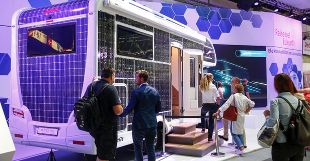
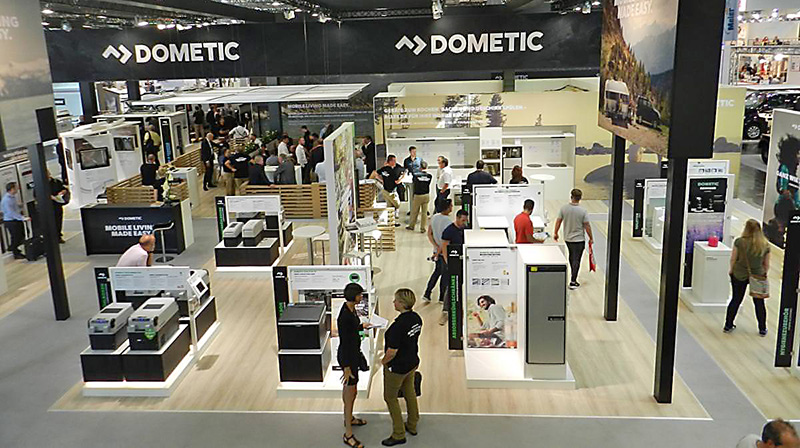

09.03.2019 - Quo Vadis, české výstavy?
Tak, a mám za sebou druhý roční cyklus. V roce 2017 jsem poprvé navštívil srpnový "Caravan Salon" v Düsseldorfu, pak podzimní "Caravaning Brno" a v březnu 2018 "For Caravan" v Praze. A celou trojičku jsem si pak střihl ještě jednou: "Caravan Salon" Düsseldorf 2018, "Caravaning Brno" 2018 a dnes i pražský "For Caravan" 2019. Myslím, že už proto mohu trochu srovnávat a zamyslet se nad tím, co může ta která výstava přinést případným návštěvníkům.
{kind=link}
Hned na úvod musím ale jednu věc zdůraznit: srovnáváme vlastně nesrovnatelné. Caravan Salon je největší světová výstava karavanů, obytných aut a všeho, co s tím souvisí. Prostě absolutní světová špička. Dokonce ani žádná výstava třeba v USA se jí svojí velikostí nepřibližuje. Podobná liga je snad podzimní Paříž ale to je tak zhruba vše. V Düsseldorfu vystavují všechny evropské značky, většinou jsou expozice přímo výrobních fabrik a hlavně - vystaveny jsou téměř kompletní modelové řady. Podzimní Brno a jarní Praha jsou proti němu jen malinké akce lokálního významu. Za vše hovoří čísla z roku 2018:
{kind=link}
Takže je to německý Goliáš proti našim dvěma Davidům. Je ale třeba zajímavé, že i když skoro všechna čísla ukazují na zhruba desetinovou velikost českých výstav, tak (pokud pořadatelé v Brně uvedli reálné číslo), tak počet návštěvníků Caravaning Brno tvoří pětinu v porovnání s Caravan Salonem. Tedy Daleko vyšší zájem návštěvníků v porovnání s velikostí výstavy. Jsme prostě u nás na takové akce "hladoví".
{kind=link}
Pokud budeme chtít charakterizovat hlavní výhody Caravan Salonu pro návštěvníka, tak to budou:
1) Vystavován kompletní sortiment evropských značek,
2) vystavována vždy skoro celá modelová řada daného výrobce,
3) uvádění světových novinek, představování prototypů, konceptů a trendů vývoje,
4) vystavují přímí výrobci, mající proti našim prodejcům v ČR téměř neomezený rozpočet,
5) vysoká "otevřenost" expozic. Návštěvník může projít, posedět, osahat drtivou většinu, i drahých aut a karavanů, volně bez průvodce,
6) velkou část výstavy (dvě haly z deseti) zabírají jen výrobci příslušenství a doplňků, vč. uvádění novinek a trendů,
7) téměř kontinuální doprovodný program.
Nevýhody Caravan Salonu jsou zřejmě jen tři:
1) přeci jen značná vzdálenost výstavy (720km z Prahy, 930km z Brna),
2) obrovská plocha a komplexnost výstavy nutí k vícedennímu pobytu,
3) pro někoho jazyková bariéra.
Vstupné je cenově srovnatelné. Dvoudenní vstup stojí v Düsseldorfu 14EUR (cca 360Kč), jednodenní v Brně i Praze je za 150Kč. Tedy žádný významný rozdíl.
A teď budeme trochu porovnávat s dvojicí výstav v ČR.
{kind=link}
Předně si myslím, (i když se vás budou organizátoři "Brna" i "Prahy" snažit přesvědčit o opaku) že jsou podle mého názoru obě výstavy naprosto stejné. Nebudu samozřejmě puntičkářsky přeměřovat metry čtvereční jejich výstavních ploch, či počítat jednotlivé návštěvníky. Myslím tím filozofii, jak se chovají k vystavovatelům a prospěšnost pro návštěvníky. A jako vysvětlení tohoto tvrzení vezmeme těch sedm výše uvedených výhod Caravan Salonu:
1) Vystavován je kompletní sortiment evropských značek
{kind=link}
Düsseldorf je největší a tím i nejprestižnější světová výstava a tak každý, kdo chce něco znamenat, na ní musí vystavovat. Návštěvník tak může vybírat opravdu ze všech značek a má tak možnost (má-li dost času) klidnou prohlídkou pochopit i řekněme filozofii jednotlivých výrobců, zavnímat kvalitativní rozdíly, apod. Expozice většinou pořádají sami výrobci ale bývá dobrým zvykem, že na stánku se najdou i zástupci regionálních dealerů. Takže mít možnost si na stánku promluvit česky (nebo alespoň slovensky) je poměrně častá. Nováčkovi se opravdu otevřou oči nad šíří nabídky evropských výrobů.
{kind=link}
A jak je to u nás ? Proti Německu vystavují v Brně a v Praze jen místní (ČR) distributoři a dealeři. Ti oficiální a také ti, kteří si auta a karavany dovážejí tak trochu neoficiálně. A prototože i přes rostoucí poptávku je dobrých a stabilních prodejců v naší zemi relativně nemnoho, je omezená i nabídka značek na obou výstavách. Protože vystavuje "prodejce" a ne "výrobce", může návštěvník najít na ploše jednu značku u třeba třech různých prodejců. Vždy jen po dvou-třech modelech. Navíc, obě výstaviště v Brně i Praze samozřejmě vybírají v rámci výstavy nájemné, které si nemůže dovolit bez problémů každý a tak místní prodejci někdy i váhají, mají-li se zúčastnit vůbec, nebo se případně přihlásí jen na jednu z výstav. Výsledkem je omezená nabídka značek, ke škodě návštěvníků.
2) Vystavována je vždy skoro celá modelová řada daného výrobce.
{kind=link}
Velká plocha Caravan Salonu umožňuje vystavení kompletní modelové řady pro daný rok. Každý výrobce předvádí vše, co si zákazník může koupit a lze si tak prohlédnout různé typy, velikosti, layouty a porovnat je mezi sebou i v rámci jednoho výrobce. Výrobce může vystavit i "okrajové" modely a taky to obzvláště u novinek rád dělá. Může tím dobře testovat zákaznickou reakci a případný zájem o novinku. To zvyšuje atraktivitu výstavy, ta přináší vyšší návštěvnost a.... spirála vzhůru pokračuje.
A jak je to u nás ? V této branži nebývá zvykem, že by výrobce poskytl lokálnímu distributorovi (tím méně v malé České republice) na výstavu "zápůjčku" sady nových modelů. Proto vše, co se u nás vystavuje, muselo být za naše peníze i koupeno. Místní prodejce prostě musí modely na výstavu nakoupit. A v rámci výstavy nebo i po ní je také prodat. Výsledkem je, že si vybírá jen "tutovky", tzn. nejlépe prodejné modely. Expozice jsou pak za prvé trochu "středoproudé" a za druhé i navzájem dost podobné. A když není pro prodejce vyloženě prodejně výborná sezóna, tak i upřímně trochu chudé. Není vyjímkou, že katalog té které značku ukazuje třeba třicet různých typů vozidel. A 25 z nich jich najdete na ploše Caravan Salonu. A obvykle jen tak od dvou do pěti v Brně nebo Praze. Ale upřímně - nemůžeme se místním prodejcům ani moc divit. Mentalita místního zájemce totiž většinou vede od okouknutí místní výstavy až k nákupu ojeteho auta nebo karavanu v cizině. Místní prodejce ostrouhá a další rok má méně chuti i prostředků pro lepší výstavní expozici. V Düsseldorfu jde tedy hlavně o "Brand image" (posílit povědomí o značce). U nás se na výstavě musí vydělat alespoň na náklady s ní spojené.
3) Uvádějí se světové novinky, představují prototypy, koncepty a trendy vývoje.

{kind=link}
Když vystavuje výrobce, navíc na "nej" výstavě, snaží se vždy představit nějakou "super-extra-original" novinku. Něco, co ho oddělí od konkurence. Nový model auta nebo karavanu, novou technologii, nějaký zajímavý prototyp nebo i nějakou bláznivou "úchylárnu". Ukazuje tak zákazníkům nejen novinky ve svém sortimentu ale také říká, že je leaderem trhu, inovátorem. A také představením prototypu testuje případný zájem. Expozice jsou pak velmi pestré a divácky atraktivní. Návštěvník se tak nejen seznámí s aktuální nabídkou ale může sledovat i trendy v celém odvětví.
A jak je to u nás ? Místní distributor se k opravdové novince nebo dokonce protopypu nedostane prakticky nikdy. Buďto je ona zatím výhradním vlastnictvím výrobce, nebo se sice koupit už dá ale je o ní všeobecný zájem. Česká republika nepatří mezi důležité regiony a tak má místní prodejce omezený přístup k takové novince. A i když by k dispozici být mohla, tak může zase prodejce zaváhat. Mám to sem brát ? Prodám to v ČR ? Nezůstane mi to v baráku a já se toho nezbavím ? A tak opět sáhne pouze po tutovkách. A expozice na některé ze "dvou největších výstav karavaningu v ČR" pak vypadá úplně stejně jako showroom v jeho sídle.
4) Vystavují přímí výrobci a značky.
{kind=link}
Pokud jsou někde v branži peníze na marketing, tak jsou v prvé řadě přímo u výrobce. Stánky firem jsou na Caravan Salonu proto prostě větší, honosnější, k dispozici je víc personálu, prospektů, propagačních materiálů, atd. atd. Ale hlavně vysílá expozice jasný signál, že jste na půdě té které značky. Vystavuje všechny své modely, personál má na oblečení loga té které značky, k dispozici je fůra katalogů, na panelech najdete veškeré další informace (popisy modelů, přehledy barevných variant interiérů, přehledy doplňkové výbavy, apod. Znovu: tady se prodává značka jako taková (výrobci pak nakonec je skoro jedno, kde si vozidlo zákazník koupí). Důležité je přesvědčit lidi, že např. "Carthago má speciální DNA, která ho řadí na kvalitativní vrchol "normálních" obytňáků."
A jak je to u nás ? Místní prodejce nemá k dispozici ani zdaleka tolik prostředků na marketing. Navíc většina místních prodejců zastupuje více značek. A stánek si pak trochu neví rady, má-li propagovat jednu značku, nebo druhou značku, nebo obě, nebo hlavně logo názvu firmy prodejce,.... Takže návštěvník trochu váhá. "Hele mámo, tady vystavuje Sunlight. Ale vždyť jsme dvě stejný auta viděli támhle vedle! Jo a vedle v hale bylo taky jedno! Který je tedy oficiální zastoupení?". Ne že by v Düsseldorfu nevystavovali místní němečtí prodejci, zastupující také více značek. Jsou ale umístěni do samostatných hal, jsou jasně označeni a vystavují většinou mimo expozice přímo výrobců. U nás ale takto vystavuje prakticky 100% stánků.
5) Vysoká "otevřenost" všech expozic.
{kind=link}
Na Caravan Salonu se dá plus-mínus prohlásit, že návštěvník může běžně vstoupit bez doprovodu někoho z obsluhy do všech aut a karavanů do řekněme 100.000EUR. A mnohdy i do těch dražších. Do těch je např. vstup otevřen také, ale uvnitř je stále přítomen ochotný člověk od výrobce. Může okamžitě odpovídat na případné dotazy a taky si návštěvníka trochu ohlídat. Nikde není žádná cedulka zakazující usednutí na sedačky nebo vyzkoušení kvality postele. Od toho přece výstavy jsou ! A když se něco zničí, tak je to součást nákladů na propagaci značky. Nic moc se neděje.
A jak je to u nás ? Zase jsme zpět v možnostech, které má lokální prodejce. To auto, do kterého návštěvník leze, je možná už prodané, nebo se bude muset po výstavě prodat. Takže skoro všude vstup s doprovodem (čest a chvála vyjímkám). Skoro v každém autě či karavanu jsou na každé sedačce či lůžku cedulky zakazující usednout nebo nedejbůh ulehnout (dvonásobná čest a chvála vyjímkám). Dnes jsem dokonce zaregistroval i cedule, upozorňující na zákaz "otevírání skříněk a zásuvek a další manipulaci s vybavením vozu". Znovu : já chápu, co k tomu místní prodejce nutí ale oni zase musí chápat nás, návštěvníky. Jestli to bude pokračovat takto dál, tak opravdu nebude naprosto žádný rozdíl mezi návštěvou výstavy a virtuální 3D prohlídkou na internetových stránkách. No a pak už případný návštěvník prostě na výstavu nepřijede....
6) Velká část výstavy pro výrobce doplňků a příslušenství

{kind=link}
Svět karavaningu je plný velkých, známých a renomovaných výrobců komponentů, doplňků a příslušenství pro naše miláčky. Na Caravan salonu zabírají celé dvě obrovské haly. A stejně jako v případě výrobců aut a karavanů vystavují své kompletní produktové portfolio a hlavně připravované novinky na další období. Návštěvník tak jen zírá, kolik se třeba vyrábí typů chladniček, toalet, topení, nosičů, markýz, vodovodních baterií, atd. atd. Mnohdy na stánku toho kterého výrobce komponentů uvidíte jeden rok produkt (jako např. já v roce 2017 viděl u německého výrobce REMIS nový typ krycích žaluzií pro vozy Fiat Ducato. A výrobci obytňáků je začali používat až pro modelovou řadu 2019). Opět je to o skvělém (a pro návštěvníka vrcholně zajímavém) přehledu, co se všechno na trhu děje, prodává a bude i nabízet v budoucnu.
A jak je to u nás ? Tady je to jednoduché: skoro jedna velká smutná nula. Vyjma několika malých a ojedinělých stánků českých a moravských výrobců (např. alarmy od Jablotronu), se tu nabídka příslušenství omezuje jen na prodej příslušenství někerého internetového obchodu, který si po dobu výstavy otevřel na ploše dočasnou "prodejnu". Nabídka stejná jako celý rok (nebo menší). Dalších pár panelů s technikou najdete chaoticky u různých prodejců aut a karavanů (protože je také nabízejí, tak je vystaví a tak příspívají k celkovému zmatku na svých stáncích). No a to je vše. A třeba přímo komponenty pro stavbu (okna, kování, technologie, panely, atd.) nenabízí naprosto nikdo. Takže velká část návštěvníků (ty, co už auto či karavan doma mají) má o důvod méně na výstavu zajít. To, co z případných možných vylepšení na ploše najdou, mohou totiž daleko přehledněji najít na jakémkoliv e-shopu.
7) Téměř kontinuální doprovodný program
{kind=link}
Téměř v každé hale a hlavně na volných plochách mezi halami, probíhá v Düsseldorfu pestrý doprovodný program. Jak zábavný (různé jízdy zručnosti s obytňákem, závodní dráhy pro elektrokola či koloběžky, atd), přes výchovné (vynikající "Starter Welt", který zabírá celou halu a nováček na ní velmi názorně pochopí základní problematiku cestování obytňákem nebo karavanem, vidí hlavní rozdíly v kategoriích, porovná výhody a nevýhody, atd. Pak už může vyrazit na výstavní plochu daleko lépe připraven). Jsou tu akce zaměřené na etiku karavaningu nebo na bezpečnost. A také milion prodejních akcí různých výrobců. Tato pestrost je samozřejmě dána velikostí výstavy ale také důsledností organizátorů výstavy - tedy výstaviště Messe Düsseldorf. Ty edukativní akce totiž musí organizovat (a platit) sami.
A jak je to u nás ? No, první vlaštovky se pomalu objevují. Sem tam nějaká přednáška (hlavně lidé ochotní se o své zkušenosti podělit), sem tam malá expozice, (třeba Besip a jeho simulátor převrácení auta), atd. Dokonce je tu i "Retro výstava" z dějin karavaningu, čítající tři vystavené exponáty, atd. Ano, naše výstavy jsou výrazně menší a tak podpůrných akcí je také méně. Ale mám takový pocit, že organizátoři výstav jak v Brně, tak v Praze, jim věnují daleko méně úsilí a péče, než Němci na Caravan Salonu. Evidentně jediný zájem výstavišť je zisk. Z nájmu ploch, ze vstupného a občerstvení. Principiálně to samozřejmě není nic špatného ale myslím, že divoké roky primitivního kapitalismu má naše republika snad už za sebou a tak by se vyplatilo používat trochu více nadhledu. Takového "helicopter view".
A tak se ptám jako v názvu tohoto článku:
"Quo Vadis, české výstavy ?"
{kind=link}
Kam se ubírají Brno a Praha ? Obě výstavy se už třetím rokem tetelí blahem a srší optimismem, jak rostou ale myslím že tento vývoj má hodně hliněné nohy. Upřímně, mohu-li vyjádřit zcela subjektivní názor, tak budoucnost moc růžově nevidím. Protože až přijdou hubenější léta, nemají se obě výstavy o co opřít. Má to víc příčin ale uvedu jen některé a také důvody, proč bude velmi těžké s tím něco udělat.
1) Dvě výstavy na ČR je prostě moc
Jsme malá země a i když bude karavaning růst (a já v to doufám), stejně budeme malý trh. Místní prodejci tak tříští své zaměření a prostředky na dvě malé akce. Nemohou do nich moc investovat, nemohou se dobře připravit, nemají argumenty pro marketingové peníze ke svým výrobcům, které zastupují. Ale představa, že se tradičně znesvářené Brno a Praha dohodnou a jeden ustoupí, tak ta je z říše pohádek.
2) Výstavy jsou moc zaměřené pouze na prodej vozidel (obytných aut a karavanů)
Naši návštěvníci se skládají (asi jako všude) ze dvou hlavních kategorií: 1) ti, co už auto nebo karavan mají a chtějí jen omrknout, co se děje a případně si najít nějakého nového mazlíka do budoucna. Můj čistě soukromý pocit je, že těch je na obou výstavách lehká větší polovina. 2) lidé, kterým se karavaning líbí a jdou se prostě pokochat. Prolézají auta a karavany, představují si, jaké to musí být super v nich jezdit a v lepších případech začnou mnoholeté snění a plánování, které někdy v budoucnu může vyústit v nákup vlastního vozidla.
Ta první skupina moc nemá, na co by se koukala. Příslušenství a vylepšení je nabízeno tak málo, že "skromná výstavka" je moc nadnesené označení. Auta a karavany jsou vystavovány hlavně ty středoproudé, tedy víceméně nic, co by je překvapilo nebo nadchlo. A tak si ze zoufalství poslechnou jednu přednášku a jdou pryč. Vědí, že inspiraci pro případnou výměnu svého auta za nové musejí hledat jinde. No a ta druhá skupina nepřináší vystavovatelům taky žádný okamžitý zisk. I když se samozřejmě všichni snaží (a tím myslím opravdově a z přesvědčení) to nedat najevo, tak je tito návštěvníci přivádějí k zoufalství. Prodejce ví, že velmi pravděpodobně z této skupiny nich "dnes-teď" nic nekápne. A on musí zaplatit nájem plochy a prodat nakoupená auta. A tato skupina je pouze okukuje a bohužel sem tam i něco odře, ulomí či poškodí. A máme tu třetí příčinu:
3) Obě výstavy ani zdaleka nejsou "visitors friendly".
Nebudu daleko od pravdy, když řeknu, že se bez doprovodu prodejce na našich výstavách nesmí do poloviny vozidel. A sednout či vyzkoušet si lehnout nesmíte v 80-90% procentech aut či karavanů. Ti rtuťovitější návštěvníci se prostě naštvou a odejdou nebo v horším případě natruc něco poškodí. A ta slušnější vetšina se dostane do takového ustrašeného pocitu. "Mohu tam vlést? Mám někoko poprosit, aby mě tam pustil? Já asi jenom nakouknu". No a pak si tu výstavu vlastně vůbec neužije. Odchází s pocitem, že byl vlastně na obtíž.
A tady velice a velice zdůrazňuji: v žádném případě to nemohu vyčítat místním prodejcům. 100% lidí by se na jejich místě zachovalo stejně. Vím to. Dodíka jsme vloni před převzetím vystavovali v březnu na ForCaravan v Praze. Byl už ale zaplacený a tím pádem můj. A já si vzal na pátek dovolenou, opatřil si tři lístky na tři dny a v autě jsem strávil všechny tři otevírací doby. A každého návštěvníka jsem poočku sledoval co dělá, na co sahá, s čím kroutí. Myšlenky šly jedna za druhou: "Proč si sakra nesundá ten bágl ze zad? Dyk´mi odře skříňky!". "No madam, ty jehlové podpadky se sakra snad hodí do divadla a ne na výstavu karavanů!", "Frajere, na těch botech máš asi tunu bahna! Tohle je výstava a ne cvičák!", atd. Prostě jsem se o svůj majetek bál.
Ale protože se asi hned tak nestaneme zajímavým a velkým trhem pro většinu výrobců, bude od nich podpora místních prodejců stále strašně mizerná. A oni pak budou muset auta na výstavu stále kupovat ze svého a na stáncích si sakra hlídat, aby nebyla moc poškozena. A tak tu stále budou zákazy, příkazy a omezení.
4) Výstaviště kašlou na vše, co nepřináší okamžitý zisk.
Obě výstaviště jsou mašiny na zisk a tak alespoň v dohledné době nemůžeme čekat doprovodné programy, které by sice byli atraktivní pro návštěvníky, ale muselo by je platit právě výstaviště. Což je vše, co souvisí se zábavou a hlavně se vzdělávacími a osvětovými akcemi. Tady bude ten podnikatelský primitivismus ještě dlouho hnízdit.
Co je ale fakt divné, že na druhou stranu (asi pod dojmem příkladu ze Slevomatu, atd). se před každou z našich výstav distribuují tisíce a desetitícíce volných voucherů na vstup. Naprostá stupidita ! Myslím, že vstupné 150Kč je pomerně férové a když jsem dnes ráno viděl těch pár lidí u pokladen a tu dlouhatanááááánskou frontu lidí přímo u vstupu, co drželi v ruce vytištěnou "čestnou vstupenku" nebo mobil s ní, říkal jsem si, že tohle je naprosto špatně. Příjem ze vstupného tak musí být nula-nula-nic. Aby pak výstaviště vydělalo, musí zvedat nájem vystavovatelům. No a začarovaný kruh se uzavírá. Letos v Praze tu je první signál: Morelo na výstavě už není a v naprosto stejné dny raději pořádá Den otevřených dveří pro veřejnost u sebe. Asi zjistili, že jejich potencionální zákazníci už na výstavu v ČR chodit nebudou.
A když už teď u nás nemáme na výstavách opravdu "sexy/trendy" novinky, když odejdou vystavovatelé těch dražších obytňáků, u kterých se může návštěvník alespoň vyfotit, když zkušenější karavanisté nenajdou nic pro vylepšení svých mazlíků, kdo tam pak bude chodit?
{kind=link}